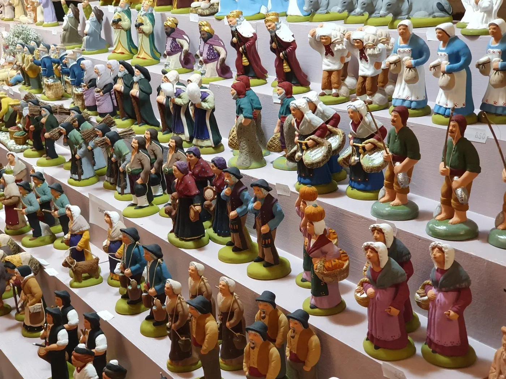
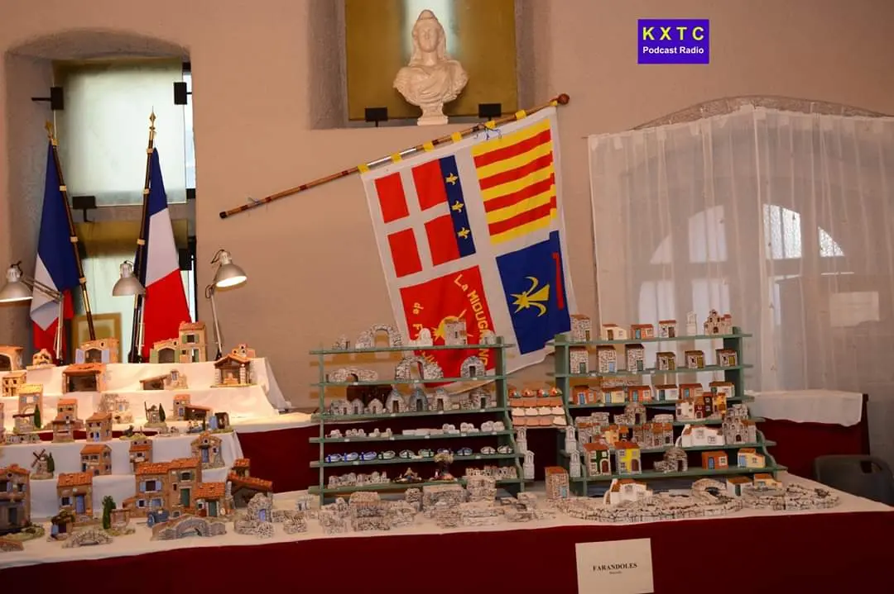
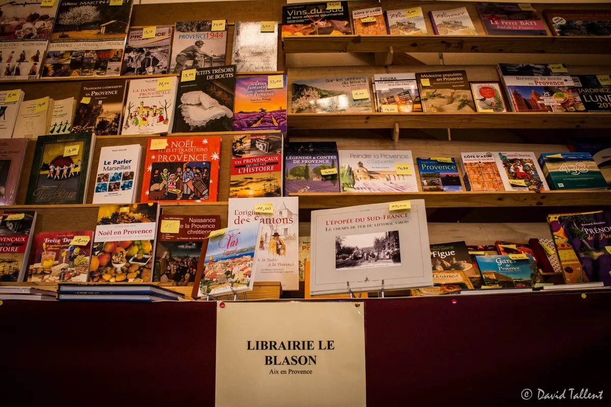

déc.20256 → 21
Foire aux santons 2025
28 stands, 19 santonniers venus de toute la Provence. Inauguration le 6 décembre, messe des santons et défilé des fifres et tambours le 7, concert de Noël le 14, vin chaud offert chaque dimanche.

Durant deux semaines, aux approches de Noël, La Miougrano réunit les meilleurs santonniers de Provence dans la salle médiévale Riculphe de l'Hôtel de Ville.
Le rendez-vous incontournable pour bien préparer les fêtes calendales : santons d'argile, grands santons habillés, crèches, produits de Provence… et l'accueil chaleureux des membres de La Miougrano.
Ouverture de la foire dans…
Inauguration annoncée par l'Office de Tourisme le dimanche 6 décembre 2026 à 11h30, place Formigé.
Sur les stands, le travail des meilleurs santonniers de Provence, à la fois sur les petits santons d'argile indispensables aux crèches provençales et sur les grands santons habillés.
En 2025, la foire réunissait 28 stands et 19 santonniers venus de toute la Provence, faisant d'elle l'une des plus grandes foires aux santons de la région.
Liste nominative des santonniers 2026 à compléter par l'association.
Exposer à la foire

Programme de l'édition 2025, donné à titre d'exemple. Programme 2026 à compléter dès sa publication.
Inauguration officielle de la foire dans la salle Riculphe (en 2025 : samedi 6 décembre, 18h30).
Messe à la cathédrale Saint-Léonce, puis défilé des fifres et tambours du 1er Régiment de Provence dans le centre ancien.
Musiques et chants provençaux par les tambourinaires et le groupe chantant, à la cathédrale.
À 16h, cour de l'Évêché, servi par nos grands santons vivants en costume !
Les membres de La Miougrano accueillent le public tous les jours et revêtent leurs costumes traditionnels le samedi après-midi et le dimanche, au son des tambourinaires.
Plan © contributeurs OpenStreetMap.
28 stands, 19 santonniers venus de toute la Provence. Inauguration le 6 décembre, messe des santons et défilé des fifres et tambours le 7, concert de Noël le 14, vin chaud offert chaque dimanche.
Une vingtaine de stands d'artisans et d'exposants du Var et de toute la Provence, des créations de 3 à 30 cm, attirant des milliers de visiteurs (Fréjus Le Magazine, décembre 2022).
Retrouvez les photos de l'inauguration et des stands dans la galerie.
Sources : Office de Tourisme de Fréjus / Estérel Côte d'Azur, Fréquence Sud (programme 2025), Fréjus Le Magazine n°83 (décembre 2022), site historique de La Miougrano.